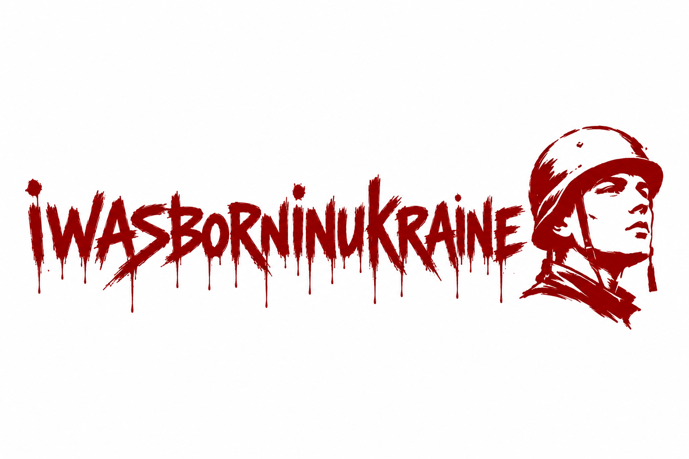
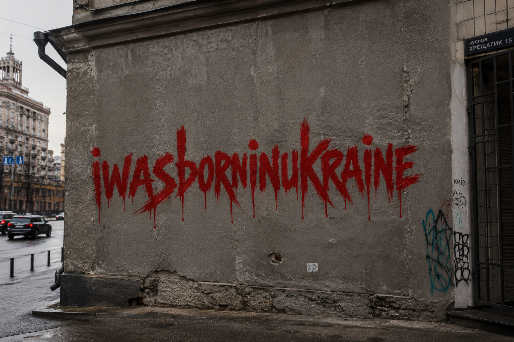
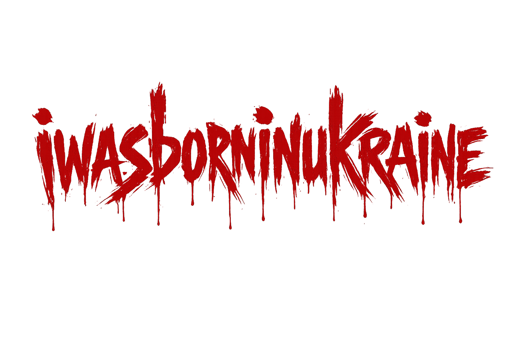
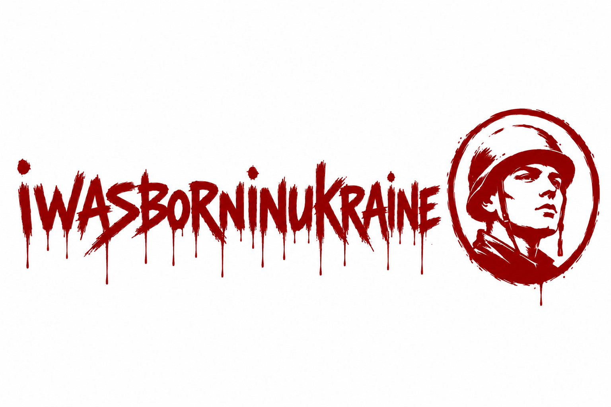

Case Study 03
A rebellious patriotic art project capturing young Ukrainians who stayed. Red paint — hasty, raw, urgent. The soldier emblem: who they were born as, vs. what they had to become.

Young Ukrainians — artists, musicians, travelers, dreamers — woke up on February 24, 2022, to a reality they never chose. They stayed. They traded paintbrushes for rifles, studio sessions for trenches, dream destinations for defense positions.
iwasborninukraine is not a brand. It's a statement. A declaration of identity forged in fire. The red paint is hasty, rebellious, urgent — scrawled on walls because there's no time for elegance when survival is the priority.
The soldier emblem — a young face in a helmet, looking upward — is the visual anchor. Not a hardened warrior, but a young person who had to become one. The tension between who they were born as and what they became is the emotional core of every piece.
"Who Ukrainians were born as vs. what they had to become — soldiers despite dreams of art, music, and travel."
The signature element. Not designed — scrawled. Brush strokes that drip. Letters that bleed. The color of blood, of urgency, of a message that can't wait. It appears on concrete walls in Kyiv, on stark white backgrounds, on dark cinematic canvases.
A young face. Not battle-hardened, but resolute. Looking upward — toward something beyond the frame. Encircled in a rough, hand-drawn ring. The emblem appears in two variants: enclosed in a circle on clean backgrounds, and standalone as a raw illustration.
Hand-lettered. Imperfect. dripping. The "i" is lowercase — personal, intimate. "WAS BORN IN UKRAINE" — declarative, unapologetic. Every letter carries the weight of the statement. This isn't a logo; it's graffiti that became an identity.
Four visual pieces, each serving a distinct purpose in the identity system:

01 — Street Installation. Khreshchatyk 15, Kyiv. The statement in its natural habitat — raw concrete, overcast sky, city life continuing around it.
02 — Brand Mark. The complete identity — hand-lettered text paired with the standalone soldier emblem. No frame, no oval. Raw, uncontained.

03 — Atmospheric. Dark canvas, red halo. The statement emerges from shadow — cinematic, emotional, urgent.

04 — Variant. Enclosed emblem variant. The soldier framed in a rough ring — a more contained, mark-like interpretation.
This project must be documented, packaged, and presented to emotionally move everyone. It's not a commercial product — it's a cultural artifact. The design work here serves a higher purpose: ensuring that the sacrifice, identity, and resilience of young Ukrainians is seen, felt, and remembered.
Every element — from the dripping red paint to the upward-gazing soldier — is designed to create an emotional connection that transcends language. You don't need to read Ukrainian to feel what this means.